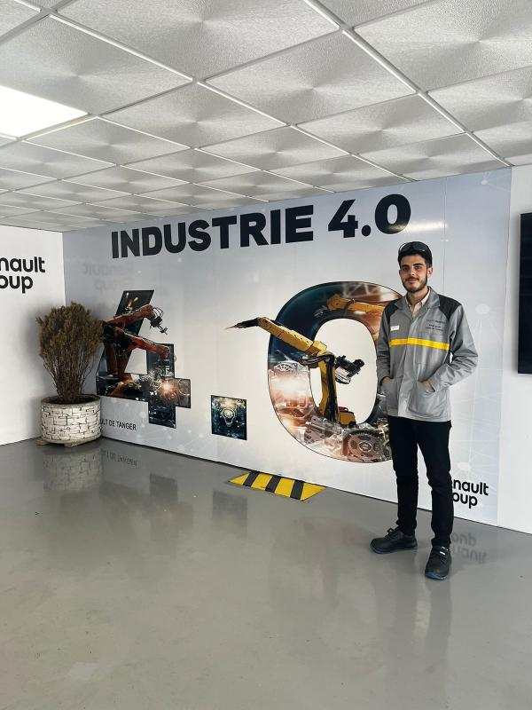
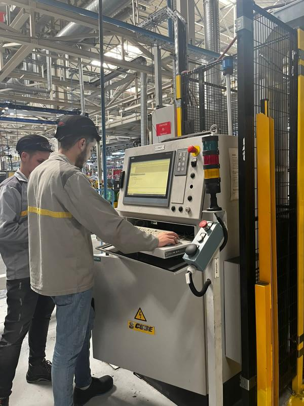
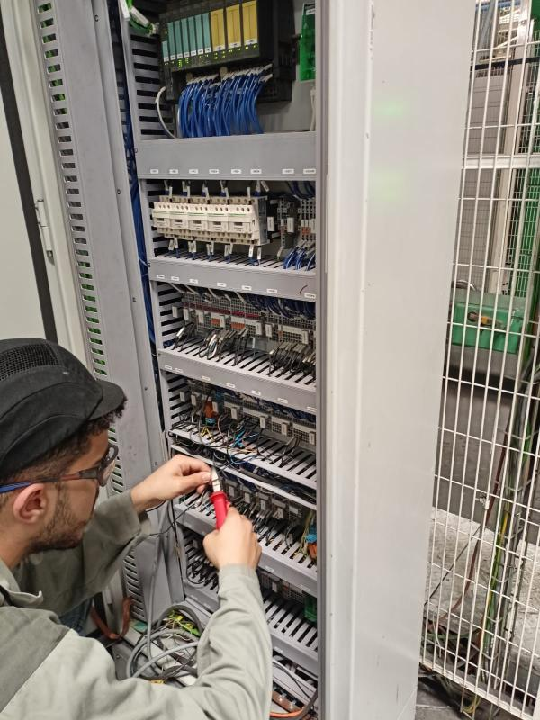
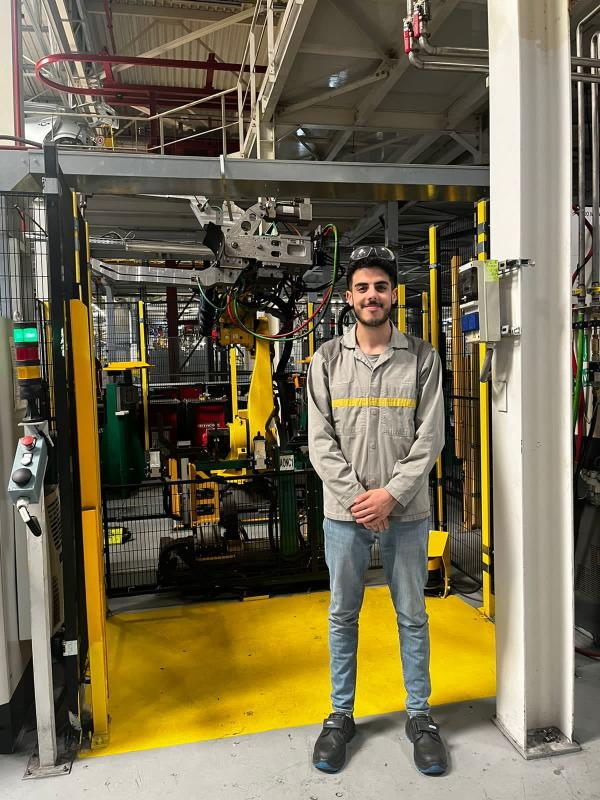

Stage technique — Automatisme & supervision industrielle, Diplôme Universitaire de Technologie
Ce stage s'est déroulé chez Renault Tanger Exploitation, au département Tôlerie, sur les zones BM30 et BM80 de la ligne d'assemblage générale de la caisse automobile. L'objectif était d'identifier les goulots d'étranglement dans le processus de production, à travers l'analyse des temps et mouvements, puis de proposer et implémenter des solutions d'automatisation et de supervision pour réduire le temps de cycle global — en suivant la démarche PDCA (Plan, Do, Check, Act).
Page développée sous ODIL affichant en temps réel le nombre de points de soudage et de rodage réalisés par les robots
Gestion automatique des voyants de l'IHM signalant le remplacement nécessaire des électrodes des robots
Signal visuel déclenché à 50 points de soudage restants avant le changement obligatoire d'électrodes
Programme Step7 activant une sirène via bouton poussoir pour signaler un manque de pièces
Échange d'informations entre 3 automates Siemens pour alerter un poste distant en temps réel
Plan → Do → Check → Act, appliquée de bout en bout pour structurer la démarche d'amélioration continue
L'implémentation du bouton poussoir de signalement en zone BM80 a réduit les déplacements inutiles des opérateurs et amélioré la coordination entre équipes. L'ajout du gyrophare et de la page IHM sous ODIL en zone BM30 a considérablement réduit le temps de préparation lié au changement d'électrodes. Ensemble, ces solutions ont contribué à réduire le temps de cycle global, augmenter la capacité de production et optimiser l'utilisation des ressources sur la ligne d'assemblage.



